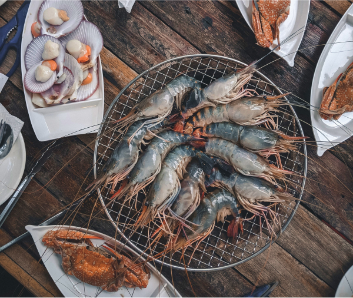

Краб
Лосось
Скумбрія
Тріска
Восьминіг

- Сезон Цілий рік, але найкраще восени.
- Діапазон улову Вздовж норвезького узбережжя.
- Поживні речовини білок, вітамін B12, селен
Коричневий краб
Щоб впіймати коричневих крабів, вам не знадобиться більше, ніж ліхтарик і швидкі рефлекси – останнє, що бачать краби, – це спалах і рухлива рука. Але треба діяти швидко: через секунду або дві краб зрозуміє, що відбувається, і використає свої клешні, щоб ущипнути вас із усієї сили, і не відпустить легко. Таким чином, ловля крабів не тільки забезпечує смачну їжу, а й викликає викид адреналіну.
Екстремальні умови для людини. Ідеальні умови для риби.
Гольфстрім, що несе теплу воду з Мексиканської затоки через Атлантичний океан, тече на північ вздовж норвезького узбережжя в прозору, чисту крижану воду Арктики. Це створює ідеальні умови для надзвичайно багатої морської екосистеми.
Дрібна риба, велика риба, молюски та інші форми життя. Деякі з них – місцеві, інші – мігрують по всьому світу. Деякі віддають перевагу холодному відкритому морю, інші живуть у тихих глибоких фіордах, захищених стінами островів. Кожен грає свою роль у складному морському життєвому циклі.
Різноманіття морепродуктів з цього середовища унікальне. Це одна з головних причин, чому Норвегія є другим за величиною експортером морепродуктів у світі. І також причина, чому шеф-кухарі та знавці усього світу обирають норвезькі морепродукти: вам буде важко знайти такий же вибір і якість деінде.


Ви отримуєте найкращі морепродукти
Неважливо, які це морепродукти, бо вони норвезькі, а значить – найвищої якості.
У Норвегії холодно. Дуже холодно.
- Зв'язатися з нами mail@seafood.no
- Телефон: +47 77 60 33 33
-
Норвезька рада з морепродуктів
Stortorget 1
PO Box 6176
N-9291 Tromsø